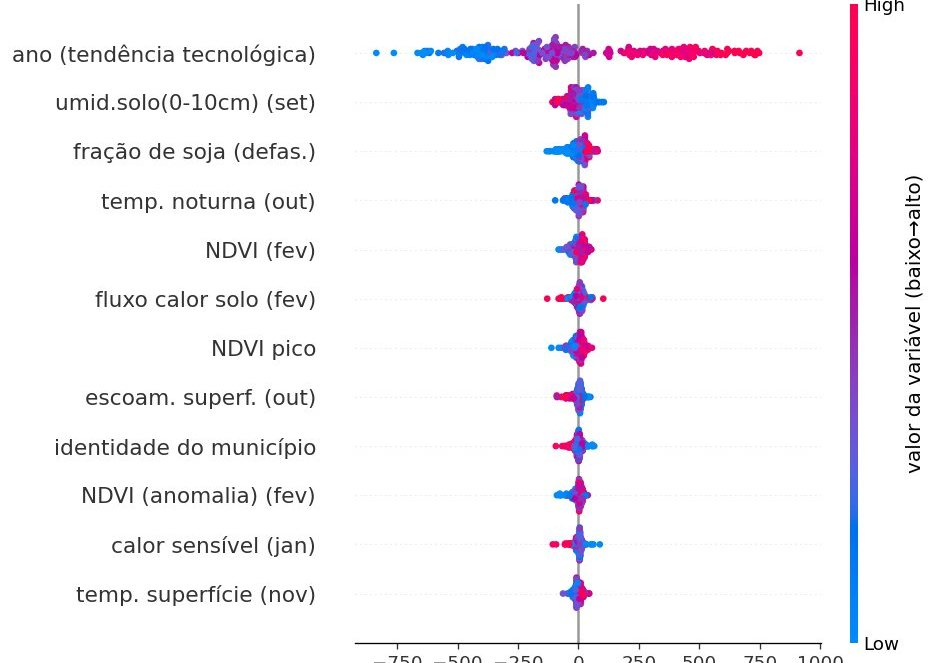

InícioProjetos de destaqueGFX GEO
Previsão de safra por satélite: PIAT e pedido de patente
Um ativo de dados de safra, clima e relevo e um modelo preditivo próprio, para estimar produtividade agrícola em células de cerca de 5,5 km em vez de um número único por município.
0,63R² em anos não vistos: 0,631 na soja e 0,634 no milho
Contexto
As previsões de safra disponíveis trabalham por município ou estado: todo produtor do mesmo município recebe o mesmo número. Montei a PIAT pela GFX GEO para o Programa Centelha 3 MG (FAPEMIG), com piloto em 25 municípios do Alto Paranaíba, para soja, milho e sorgo, safras de 2001 a 2023.
O que fiz
- Montei o ativo de dados: produção agrícola do IBGE/SIDRA, clima do FLDAS e do CHIRPS, índices de vegetação e temperatura do MODIS, relevo do ANADEM e frações de cultura do MapBiomas.
- Desenhei a grade de células na resolução do CHIRPS com supervisão fraca: o rótulo é municipal, as variáveis são por célula.
- Rodei uma campanha de mais de 30 versões de experimento, com rastreabilidade completa de cada uma.
- Encontrei e corrigi um vazamento metodológico: a seleção de variáveis fora do fold inflava o R² do sorgo em cerca de 0,13.
- Refutei com teste placebo um ganho aparente de variáveis de solo.
- Produzi o material de submissão: documento científico, anexo técnico, pitch, cronograma e mapas 3D.
Como funciona, em quatro etapas
Dados
- IBGE/SIDRA
- FLDAS e CHIRPS
- MODIS
- ANADEM e MapBiomas
Processamento
- Extração zonal no Earth Engine
- Grade de células ~5,5 km
- Área cultivada como máscara
Modelo
- ExtraTrees
- Validação por ano não visto
- Placebo, SHAP e conformal
Produto
- Mapas de produtividade prevista
- Agente de IA por coordenada (previsto)
Método
- Validação temporal leave-one-year-out, com todo o pré-processamento dentro do fold.
- Controle placebo: cada variável candidata é comparada com uma cópia embaralhada dela mesma, em várias sementes.
- ExtraTrees com o ano como tendência tecnológica; transformação quantil-normal do alvo no sorgo.
- Interpretação por valores de Shapley (SHAP) e intervalos por predição conformal.
- Proxies hidro-topográficos (TWI, declividade) e janelas fenológicas por cultura.
Resultado
- R² em anos não vistos: 0,631 na soja, 0,634 no milho e 0,490 no sorgo (piloto Alto Paranaíba).
- A fração de lavoura medida por satélite apareceu como 2º maior driver do milho e 3º da soja por SHAP.
- O efeito do relevo sobre a produtividade é real, mas acontece abaixo da escala do município: a média municipal o dilui.
Figuras



Pedido de patente BR 10 2025 019783 9
Pedido depositado em 16/09/2025, com a Universidade Federal de Uberlândia como titular. O título registrado é "Método de previsão de produtividade agrícola, através da seleção automática de variáveis climáticas oriundas de sensoriamento remoto". É um pedido depositado, não uma patente concedida, e o conteúdo técnico só se torna público quando o INPI publicar.
- Pedido depositado BR 10 2025 019783 9, patente de invenção
- Depósito no INPI em 16/09/2025
- Titular: Universidade Federal de Uberlândia